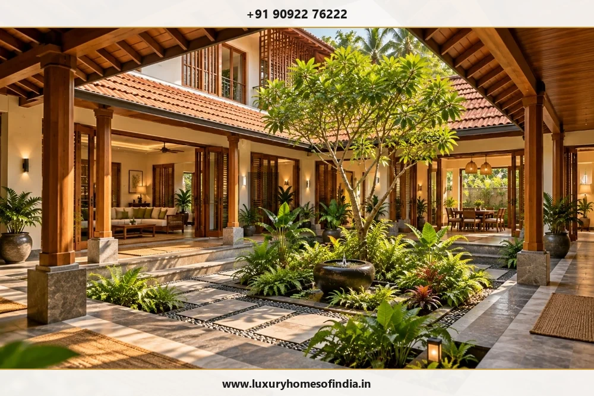
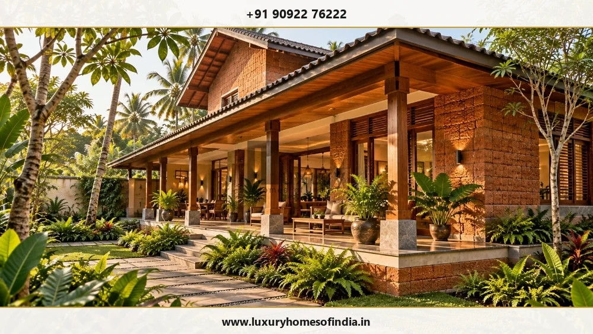

Planning a bespoke home involves more than choosing a design. Architecture, structural engineering, materials, interiors and construction need to work together within a clearly defined scope.
Luxury Homes of India (LHI) offers residential architecture and construction services in Chennai, with a focus on bespoke homes and villas. Its published service offering includes architectural design and planning, structural engineering, turnkey villa construction, interior execution and renovation services.
If you are planning a new home or considering changes to an existing property, start by defining what you need, what you have already completed and which decisions require professional guidance.
Architecture and construction, considered together
A design decision can affect several parts of a home. A large opening influences structural design. A double-height living room affects lighting, cooling and acoustics. Kitchen layouts depend on storage, appliances and service connections.
Considering these relationships during design development gives the project team an opportunity to identify unresolved decisions before they become construction changes.
When evaluating an architecture and construction company in Chennai, discuss:
- Who prepares and coordinates the architectural drawings.
- Which structural engineering and building-services deliverables are included.
- How materials, finishes and specifications are documented.
- Which decisions require your approval.
- How changes to the design or scope are recorded and priced.
- What inspections, documentation and handover arrangements are included.
The aim is a clear understanding of how the project will move from design to execution.
Bespoke homes and villas designed around your needs
Your home should respond to your plot, household and preferred way of living. You may need privacy between family and guest areas, spaces for several generations, a quiet workspace, generous entertaining areas or stronger connections between indoor and outdoor living.
These requirements can shape the architectural brief from the beginning. Consider discussing:
- Family, guest and private spaces.
- Circulation, privacy and room relationships.
- Kitchens, utilities and storage.
- Daylight, shading and ventilation.
- Courtyards, gardens, terraces and balconies.
- Vastu preferences, where relevant to your brief.
- Accessibility and potential future requirements.
- Smart-home systems and ongoing maintenance.
The objective is to develop a coherent home in which design choices support everyday use, rather than treating each feature as an isolated upgrade.

Architecture and construction services
Bespoke architectural design
Develop a home around your requirements, site conditions and architectural preferences. The design discussion can address room relationships, circulation, privacy, outdoor connections, elevations and material selection. Confirm the drawings and design stages included in the proposed service.
Structural engineering
Coordinate architectural intent with site-specific structural requirements. Foundation and structural decisions should reflect the available site information, proposed building and appropriate professional assessment. Confirm which calculations, drawings and engineering services are included in the appointment.
Turnkey villa construction
Define the work required to take a home from an agreed design to construction and handover. A turnkey proposal should identify deliverables, material specifications, exclusions, responsibilities, payment terms and the process for approving changes. The exact scope depends on the agreement.
Luxury interior execution
Coordinate flooring, lighting, joinery, kitchens, bathrooms, furniture and finishes with the architectural design. Discuss how interior dimensions, equipment, electrical points and plumbing connections will be coordinated, and identify which items are included in the construction agreement.
Smart-home integration
Plan automation around the systems you intend to use. Discuss controls, wiring, equipment locations, connectivity and access for maintenance during design development. Confirm the products and installation responsibilities in the final scope.
Renovation and smart upgrades
Existing homes may require changes to layouts, finishes, services or technology. Share available drawings, photographs and details of the proposed work. The required assessment and the feasibility of structural or service-related changes should be established before execution commitments are made.
Choose the right scope for your project
Not every homeowner begins at the same stage. Use the table below to align your project entry point with the required services:
| Your Starting Point | What to Discuss & Define |
|---|---|
| A plot and an initial idea | Architectural brief, site information and design requirements. |
| A developing concept | Design refinement, engineering coordination and budget priorities. |
| Existing architectural drawings | Construction scope, specifications and coordination responsibilities. |
| A home requiring interiors | Finish schedules, joinery, kitchens and service interfaces. |
| An existing property | Assessment, renovation requirements and upgrade feasibility. |
A useful proposal responds to the work you actually need. It should not assume that every project requires the same package of services.
Planning a home for your Chennai site
Every plot has its own conditions. Review the following considerations with the relevant design and technical professionals:
Orientation, daylight and comfort
Discuss solar exposure, glazing, shading, privacy and ventilation together. The right approach depends on the orientation, surroundings, room use and design of the specific home.
Surrounding buildings and privacy
Consider neighbouring properties, road frontage, overlooking and the placement of windows and outdoor spaces when developing the layout.
Rainwater and waterproofing
Coordinate roof drainage, terraces, wet areas, waterproofing details and external ground levels in the design and construction documentation.
Materials and site exposure
For coastal or otherwise exposed sites, ask the design and engineering team to assess suitable materials, fixtures and corrosion protection for the actual exposure conditions.
Access and permissions
Review site access, construction logistics and the approvals applicable to the property before committing to execution. Clarify who prepares submissions, coordinates with authorities and pays statutory charges.

What should a construction proposal include?
When comparing architecture and construction companies, look beyond portfolio photographs and headline rates. A useful proposal should explain:
- Design deliverables: drawings, design stages and revisions.
- Professional responsibilities: architecture, structural engineering and building services.
- Construction scope: included work packages and exclusions.
- Specifications: materials, finishes, allowances and substitution procedures.
- Interiors and external works: kitchens, wardrobes, furniture, landscaping and other included items.
- Approvals: submission responsibilities and statutory charges.
- Commercial terms: payment milestones, taxes, allowances and variation procedures.
- Programme: proposed stages, dependencies and schedule assumptions.
- Handover: inspections, testing where applicable, snagging and documentation.
Confirm who will deliver each professional service and verify the relevant qualifications, registrations and contractual responsibilities before appointment.
Your project journey with LHI
Discuss your requirements
Share your plot location, available drawings, household needs, design preferences and budget priorities.
Develop the architectural direction
Discuss the layout and design approach alongside the known site constraints and functional requirements.
Coordinate the technical scope
Establish how engineering, building services, interiors and material decisions will be documented and coordinated.
Agree on the proposal
Review responsibilities, inclusions, exclusions, commercial terms, the proposed programme and the process for approving changes.
Construct and prepare for handover
Work should follow the agreed drawings, specifications and contract. Confirm the inspection, testing, snagging and handover requirements for your project.
The stages, deliverables and responsibilities must be agreed for the individual project; this outline is not a guarantee of a particular programme or outcome.
Why consider Luxury Homes of India?
- A focus on bespoke residential projects: LHI's published offering centres on personalised homes, villas and related residential services.
- Architecture and construction in one project discussion: Architectural planning, structural engineering, construction and interiors can be considered when defining the scope.
- A Chennai base: Homeowners can discuss their proposed project with the company at its listed Guindy office.
- A residential project portfolio: LHI publishes completed and ongoing project listings. Review individual project details and confirm the company's role, scope and status when assessing relevant experience.
The best way to determine whether LHI suits your project is to discuss your requirements and review a proposal with clearly defined responsibilities.
Frequently asked questions
Discuss your home project with LHI
Bring your ideas, site information and practical requirements to an initial project discussion. Luxury Homes of India can discuss its available architecture and construction services and the scope that may be relevant to your proposed home.
Contact Luxury Homes of India
Phone: +91 90922 76222
Email: info@luxuryhomesofindia.in
Office: #85, 4th Floor, Lotus Tower, Guindy, Chennai – 600032.